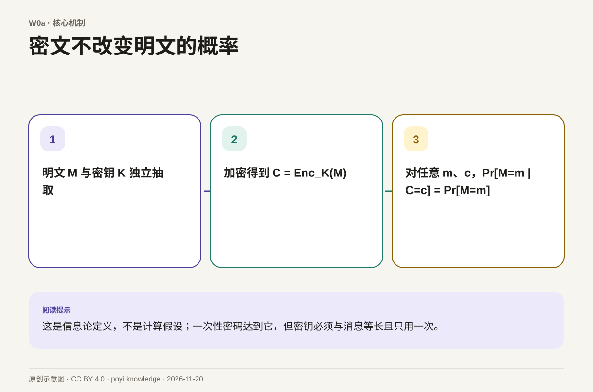
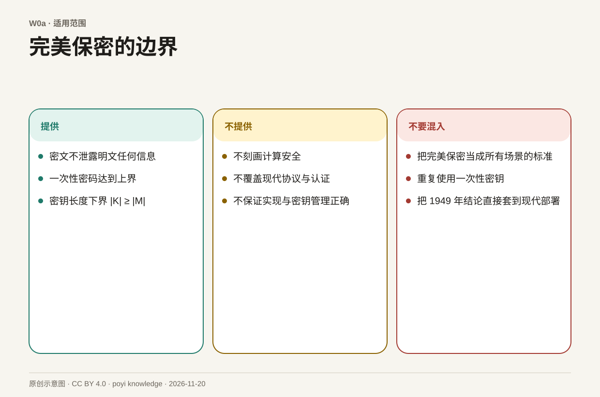

原理与机制
定理：香农完美保密定理（Shannon's Perfect Secrecy Theorem）。完美保密的定义只有一句话：密文不泄露明文的任何信息。香农在 1949 年给它下了严格的数学定义，并且证明了一件事——只有一次性密码能达到这个天花板，而代价是密钥必须和消息一样长。
先说设定。一个保密系统由明文空间 M、密钥空间 K、密文空间 C 组成；密钥 k 与明文 m 独立抽取（这是前提，不能省）；加密算法 Enc_k 把明文映到密文，解密算法 Dec_k 映回去。定义（完美保密，perfect secrecy）：对任意明文分布、任意明文 m 与任意密文 c，都有
P(M = m | C = c) = P(M = m)
也就是拿到密文之后，你对明文的信念一点都不变。等价的另一种写法是香农自己的那一个：任意两条明文 m1、m2，用同一把密钥加密后产生任一给定密文的概率必须相等（Pr_k[Enc_k(m1) = c] = Pr_k[Enc_k(m2) = c]）。中文教材常把它写成 C(K) = C(P)：密文的统计分布与明文无关，密钥对明文到密文的映射是"任意重分配"——重分配成什么样都行，只要跟明文内容无关。用信息论的语言，就是互信息 I(M; C) = 0，也就是 H(M|C) = H(M)。香农在 1949 年证明了这几种写法互相等价，所以它们常被混着叫。定理一（一次性密码达到这个界）：取 M = K = C = {0,1}^n，Enc_k(m) = m ⊕ k，k 在 K 上均匀分布。因为密文 c 与密钥一一对应（k = c ⊕ m），Pr[C = c] = 2^{-n} 与 m 无关，于是 P(M = m | C = c) = P(M = m) 成立。完美保密。定理二（界，香农界）：任何完美保密系统都满足 |K| ≥ |M|（熵版本是 H(K) ≥ H(M)）。反证很简单：假设密钥比明文少，固定一个能出现的密文 c，用全部密钥去解它，最多解出 |K| 条明文；|K| < |M| 时，必然存在一条明文 m* 永远不可能产生 c，于是 P(M = m* | C = c) = 0，而 P(M = m*) > 0，定义被破坏。换句话说：密钥必须至少和消息一样长，这不是工程建议，是数学必然。
定理三（唯一性）：完美保密系统的结构被完全定死了。对每一把密钥 k，Enc_k 必须是 M → C 的双射（否则同一密文能解出两条明文，前述论证立刻适用）；每个密文 c 对应的「明文-密钥」组合数恰好是 |K|。当 |K| = |M| 时，这等价于说：每条消息都配一把专属的、长度等于消息的随机串——这就是一次性密码。严格讲，任何完美保密系统都是"一次性密码再叠一层不依赖密钥的固定置换"，所以"OTP 是唯一解"这句话在等价意义下成立，不是字面唯一。最后是量词。这条定理的结论对所有明文分布、所有与明文独立的密钥分布、所有攻击者成立——哪怕攻击者的算力无限、时间无限、对手是量子计算机、对手本人。这是信息论安全（information-theoretic security），也叫无条件安全（unconditionally secure）。

为什么重要
因为它给了密码学一把绝对刻度。在这条定理之前，"安全"这个词是没有数学含义的。
在那之前，人们说一个密码"够硬"，靠的是试、靠的是经验、靠的是设计者自己的信誉。香农做的是把安全性从"感觉"变成"可证明的界"：他不但给出了一个安全的定义，还给出了这个定义下能做到的上限，并且证明上限之外的一切方案都是浪费。1.它决定了"一次性密码为什么在数学上无可挑剔、在工程上却用不了"。 密钥长度必须等于消息长度，这一条就把绝大多数场景挡在门外——密钥怎么分发、怎么存、怎么销毁，光是想想就头疼。2.它逼出了"可计算安全"这条出路。 既然允许攻击者算力有限，就可以用短得多的密钥去换取"破不起"。Diffie 与 Hellman 在 1976 年把这个取舍说得很直白：一个系统"安全"是因为破译代价太高（computationally secure），还是因为再强的算力也破不了（unconditionally secure），这是两条完全不同的路。现代密码学几乎全押在第一条路上。
它还是后面一切的坐标原点。Goldwasser 与 Micali 1982 年做的事，说白了就是一句话：把"零信息"换成"计算上零信息"。香农说"密文对明文的互信息必须是零"，他们说"互信息可以非零，只要攻击者算不出来"。语义安全、IND-CPA、IND-CCA、非可延拓性、UC 安全性，全都是这条定理的"计算版本"的下一代后代。再往前看一层：今天所有"可证明安全"的论文，最终都要归约到某个困难假设（分解整数、离散对数、格问题……）。而这些假设之所以能站住脚，恰恰是因为香农证明了"如果连密钥都和消息一样长都无法保密，那任何更省的办法都至少要依赖某个具体的数学难题"——这个下界是所有假设性安全的许可证。
应用与实例
今天没有哪套主流系统敢宣称"完美保密"，但这条定理的东西在真实世界里有好几种活法。
一、它真的服役过，而且服役了很久。 1917 年 AT&T 的 Gilbert Vernam 提出把两卷穿孔纸带做模 2 加的想法，1919 年拿到专利，这就是"一次性纸带"（one-time tape）。美军把它做成了 SIGTOT 系统，用于高等级的电传流量；苏联人更彻底——他们把随机数印成整本整本的册子，通过外交邮袋送到各国大使馆，用一页撕一页，用完销毁。这是完美保密唯一大规模成功的工程形态。
二、它教给现代密码学最贵的一课：前提一旦被破坏，一切归零。 "维诺纳计划"（Venona）破的就是苏联的一次性密码——不是因为数学被攻破，而是因为纳粹德国逼近莫斯科时，苏联的密码纸生产商赶工，印出了约 35000 页重复的密钥。重复的那些页里，c1 ⊕ c2 = m1 ⊕ m2，两条明文的异或就露出来了。1943 年分析员 Richard Hallock 发现了"深度"（depth，即同一页密钥被用两次），1944 年 Genevieve Feinstein 发现苏联人甚至把密钥组明文发在电报里，1946 年 2 月 Meredith Gardner 读出第一条电报。这项工程一直做到 1980 年 10 月 1 日才停，几千条电报里只有一部分被解出——它是完美保密最好的广告，也是最好的警告。
三、它活在量子密钥分发里。 BB84 之后的 QKD 协议解决的就是"密钥分发"这个死结：双方先用量子信道共享一串随机比特，再配一次性密码，数据层因此获得信息论安全。Bennett、Brassard 与 Breidbart 在 1984 年就提出过"量子密码学"和"量子一次性密码"，这个思路今天叫"QKD + OTP"。四、它作为标尺，出现在几乎所有安全定义的源头。 "这个方案是不是语义安全的""这算不算完美保密的可计算版本""对称密钥到底该多长"——所有这些问题都要拿香农的刻度去比。所以它是活的：不是被装进天线里的算法，而是被钉在天花板上的刻度。
边界与攻击面
这条定理本身没被推翻，它被"绕过"了。真正的攻击面在它的三个前提上，每一个都极易碎。
- 它只管机密性，不管完整性。 一次性密码是可以篡改的：攻击者把密文里的一位翻过来，收信方解出来的是一条被翻转过的明文，而且完全看不出被动过手脚。所以 OTP 不提供认证、不抗选择密文攻击。香农的定义里根本没有"完整性"这一栏——这是定义本身的边界，不是实现的 bug。- 它泄露长度。 完美保密系统必然泄露明文长度（否则密文空间是无限的），除非你用固定长度的填充或分块协议去补。真实流量分析靠的就是长度、时序、流量大小。- 前提在实务里极脆。 密钥必须真随机、长度 ≥ 消息、绝不复用、绝不泄露。Venona 就是"复用"这一条翻的车。而"真随机"这一条到今天依然能翻车：伪随机数生成器被攻破、随机数种子从熵池里重复取、虚拟机快照导致随机状态回滚——任何一条都能把完美保密打回原形。- 密钥分发是无解的死结。 要保密就得先把一条和消息一样长的秘密安全送到对方手里；如果这条信道能被监听，你已经在第一步把秘密交出去了。Diffie–Hellman、QKD 都是为了绕开这个死结而生，代价是复杂性。- 它给出的"唯一解"是严格的、也是无情的。 香农的定理意味着：任何不满足"密钥 ≥ 消息"的方案，在信息论意义上都是不安全的——DES 的 56 位密钥在理论上就是裸奔，AES 的 128 位也是。今天所有真实系统都是"可破但太贵"。所以在工程语境里，"我的系统是完美保密的"这句话基本等于"我的系统有 bug"。
- 定理后来被"修正"了两次。 一次是 Goldwasser–Micali：把"零信息"放宽成"计算上零信息"，代价是要挂一个困难假设——从此"安全"不再是定理，而是定理加假设。另一次是语义安全与 IND-CPA 等价性的成立条件：1984 年的原始等价性带技术条件（对攻击者所选明文的概率分布有最小熵要求），要到 Goldreich 的教科书框架、以及 2003 年 Watanabe–Shikata–Imai 的工作才被清理干净。连"等价"这件事本身，都需要后来者来收拾。
- 最后一点边界：完美保密是单条消息、静态、无状态的性质。多条消息共享密钥、协议需要多轮交互、敌手是系统里的一个活跃参与者——这些香农一个都没管。

历史与背景
- 1945 年：香农在贝尔实验室写完战时报告《A Mathematical Theory of Communication》，当时是绝密，1949 年才解密。- 1948 年：《Bell System Technical Journal》刊出《A Mathematical Theory of Communication》（第 27 卷第 3 期，379–423 页），信息论正式诞生，也带来了"熵"这把尺子。- 1949 年 10 月：《Communication Theory of Secrecy Systems》发表在《Bell System Technical Journal》第 28 卷第 4 期，656–715 页。完美保密的定义、香农界（密钥数不少于明文数）、一次性密码的最优性、以及"唯一解距离"（衡量一个方案离完美保密还有多远），全部出自这一篇。- 1976 年：Diffie 与 Hellman 在《New Directions in Cryptography》里明确区分 computationally secure 与 unconditionally secure，并指出一次性密码是当时唯一在用的无条件安全系统、但因为密钥太长而不实用。"可计算安全"这条路是从这一篇开的。
- 1982 / 1984 年：Goldwasser 与 Micali 发表《Probabilistic Encryption》，把香农的"零信息"翻译成"计算上零信息"，现代定义范式开始；香农的定理从"要达到的目标"变成了"出发点"。- 1984 年：Bennett、Brassard 与 Breidbart 提出量子密码学与量子一次性密码，给完美保密在"密钥分发"这个死结上开了一个物理学的口子。- 今天：一次性密码活在教科书和 QKD 教科书里；完美保密活在每一个安全定义的引言里。它是密码学唯一一条没有被超越、只被绕开的定理。
逐步示例与核验
形式模型与复算步骤
[\Pr[\mathrm{Bad}_A(\lambda)]\le \varepsilon(\lambda)]
香农完美保密定理的公开参数、密钥/随机数与消息；变量说明：Bad 为归约中定义的失败事件，ε 为可忽略函数。1.定义失败事件。2.构造归约把攻击者转成困难问题求解器。3.证明失败概率上界。边界：公式只覆盖已登记的参数与假设；参数取值、标准版本和实现细节仍以来源为准。
参考出处
- Wikipedia search entry for 香农完美保密定理. https://zh.wikipedia.org/w/index.php?search=%E9%A6%99%E5%86%9C%E5%AE%8C%E7%BE%8E%E4%BF%9D%E5%AF%86%E5%AE%9A%E7%90%86
- Handbook of Applied Cryptography (Menezes, van Oorschot, Vanstone). https://www.cacr.math.uwaterloo.ca/hac/